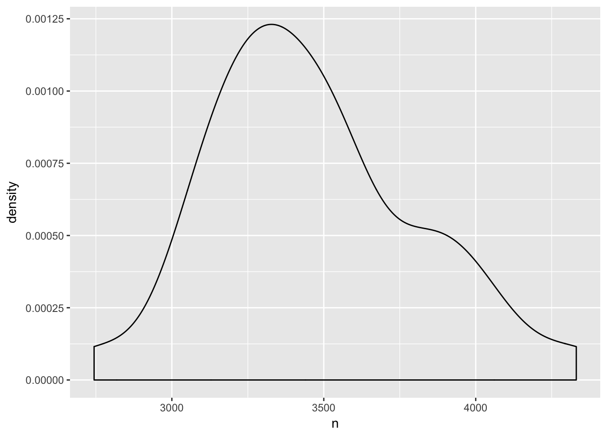
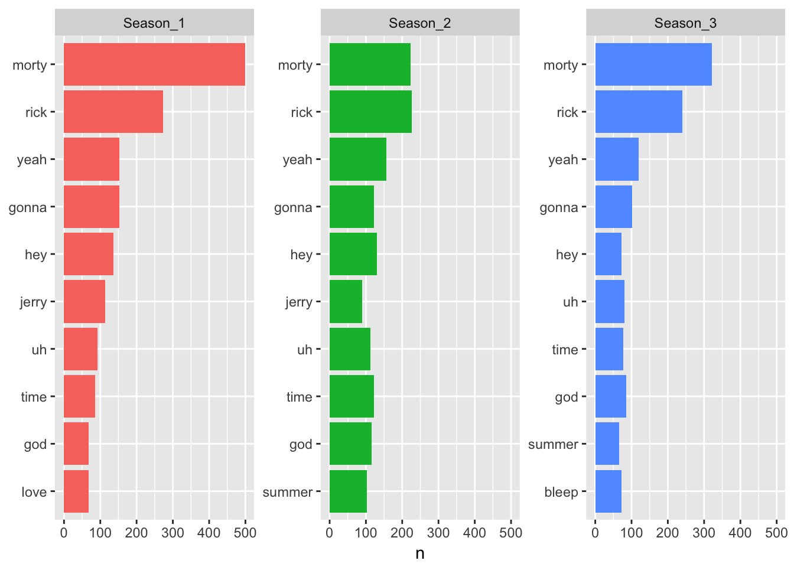
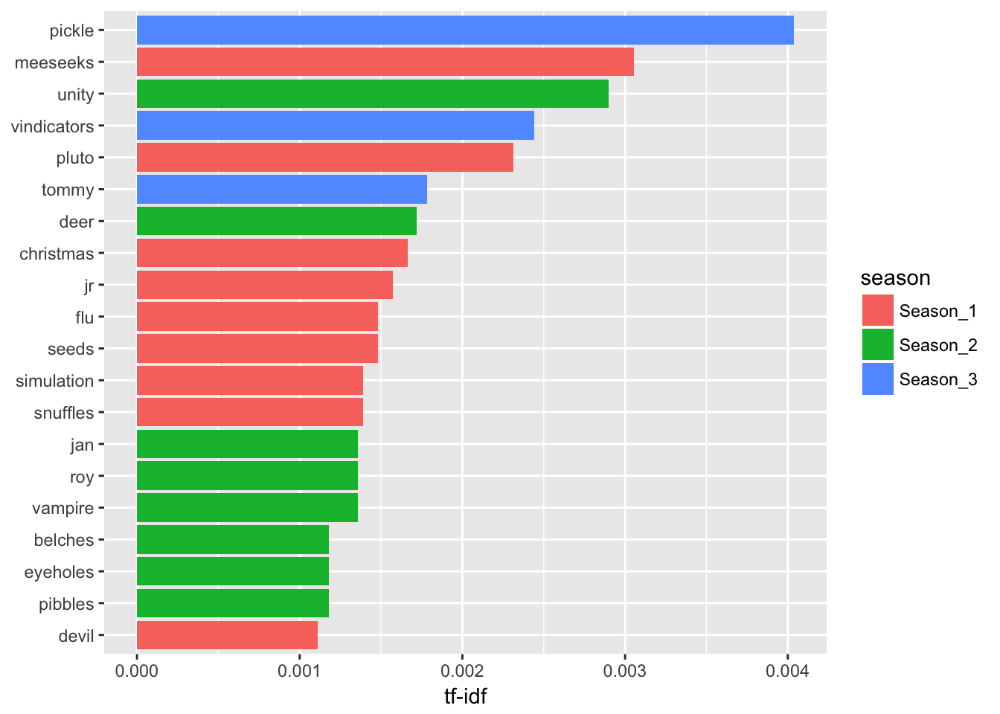

Tamas Szilagyi


For those unfamiliar with the show, Rick and Morty is an animated series about the interuniversal exploits of a half-drunk mad scientist Rick, and his daft grandson Morty. Living under one roof with his daughter, Rick constantly drags his grandson Morty along for adventures into unusual worlds inhabited by surreal creatures. At first hesitant to accompany his eccentric grandad, Morty slowly grows into an indispensable sidekick. Using Rick’s portal gun the two travel through space and time, leaving the rest of the disfunctional family at home.
Most episodes draw inspiration from or make fun of cult movies such as Back to the Future, A Nightmare on Elm Street, Inception and many other classics by the likes of John Carpenter or David Cronenberg. Besides the ruthless humor and over-the-top visual scenery, the show brilliantly builds independent sci-fi realms, going about their day-to-day according to their wacky rules.
After reading the book Tidy Text Mining online, I have been wanting to try out some of the concepts outlined in the book, and the functions of the accompanying package on an interesting dataset. So I was pretty stoked to find Francois Keck’s subtools package on GitHub, that allows for reading .srt files (the usual format for subtitles) straight into R.
When the subtitle files are stored in folders according to season, the entire series can be read with one command, read.subtitles.serie(). We convert resulting MultiSubtitles object to a data.frame with a second command subDataFrame(). The subtitle text is going to be in the $Text column, surrounded by additional variables for line id, timestamp, season and episode number. This is the format preferred by the tidytext package, as it is by the rest of tidyverse, right now the most popular programming paradigm in R.
library(subtools)
a <- read.subtitles.serie(dir = "/Users/tamas/Documents/my_site/data/rick and morty/")## Read: 3 seasons, 31 episodes#a <- read.subtitles.serie(dir = "\\\\ad.ing.net/WPS/NL/P/UD/200005/UH44YF/Home/My Documents/ING Work/blog/rm")
df <- subDataFrame(a)
str(df)## 'data.frame': 16821 obs. of 8 variables:
## $ ID : chr "1" "2" "3" "4" ...
## $ Timecode.in : chr "00:00:02.445" "00:00:03.950" "00:00:05.890" "00:00:07.420" ...
## $ Timecode.out: chr "00:00:03.850" "00:00:05.765" "00:00:07.295" "00:00:08.925" ...
## $ Text : chr "Morty, you got to... come on." "- You got to come with me. - Rick, what's going on?" "I got a surprise for you, Morty." "It's the middle of the night. What are you talking about?" ...
## $ season : chr "Season_1" "Season_1" "Season_1" "Season_1" ...
## $ season_num : num 1 1 1 1 1 1 1 1 1 1 ...
## $ episode_num : num 1 1 1 1 1 1 1 1 1 1 ...
## $ serie : chr "rick and morty" "rick and morty" "rick and morty" "rick and morty" ...Now we can dive straight in using the tools most R users are familiar with, such as dplyr or ggplot2. For starters, let’s see how many words the characters utter per episode.
library(dplyr)
library(tidytext)
library(ggplot2)
df %>% unnest_tokens(word, Text) %>%
group_by(season_num, episode_num) %>%
count() %>%
ggplot(aes(n, fill = episode_num)) + geom_density()
Let’s start the explorations with the bread and butter of text mining, term frequencies. After excluding stop_words from the dataset, we can peak at the top five words per season.

Both seasons are dominated by, well, Rick and Morty. The main characters are tirelessly addressing each other, talking one another either into or out of the mess they find themselves in. What stands out most is the absence of Rick’s daughter, Beth from the top 10 in all seasons. She’s perhaps the only sane person of the family, but then again, sanity doesn’t get too much airtime on this show.
Besides calculating the number of times each word appears, we can similarly get the number of times each two words appear, officially called bi-grams.
Overall, the top words are almost identical in the three seasons. But where do the seasons differ from each other then? This is where text mining’s notorious acronym, tf-idf comes to play. It stands for term frequeny - inverse document frequency, where we take the word counts and multiply it by “the logarithmically scaled inverse fraction of the documents that contain the word”. Simply put, we will penalize the words that are common across all seasons, and reward the ones that are not. This way, we bring forth the words most typical of each season. Thanks to tidytext, implemenation is a piece of cake:
tidy_df %>%
count(season, word, sort = TRUE) %>%
bind_tf_idf(word, season, n) %>%
arrange(desc(tf_idf)) %>%
mutate(word = factor(word, levels = rev(unique(word)))) %>%
top_n(20) %>%
ggplot(aes(word, tf_idf, fill = season)) +
geom_col() +
labs(x = NULL, y = "tf-idf") +
coord_flip() To see if this holds, we can look at the words surronding both words in most sentences.
library(tidyr)
stop_words <- stop_words %>%
rbind(data.frame(word = c("xhmikosr", "www.addic7ed.com",
"sync", "corrections"),
lexicon = "custom"))
rm_bigrams <- df %>%
unnest_tokens(bigram, Text, token = "ngrams", n = 2) %>%
separate(bigram, c("word1", "word2"), sep = " ") %>%
filter(!word1 %in% stop_words$word) %>%
filter(!word2 %in% stop_words$word) %>%
count(word1, word2, sort = TRUE)
rm_bigrams## # A tibble: 7,284 x 3
## word1 word2 n
## <chr> <chr> <int>
## 1 whoa whoa 47
## 2 yeah yeah 34
## 3 grandpa rick 31
## 4 god damn 24
## 5 tiny rick 24
## 6 ha ha 23
## 7 hey rick 23
## 8 holy crap 23
## 9 portal gun 23
## 10 ice cream 22
## # ... with 7,274 more rowslibrary(igraph)
library(ggraph)
rm_bigrams <- df %>%
unnest_tokens(bigram, Text, token = "ngrams", n = 2) %>%
separate(bigram, c("word1", "word2"), sep = " ") %>%
filter(!word1 %in% stop_words$word) %>%
filter(!word2 %in% stop_words$word) %>%
group_by(season) %>%
count(word1, word2, sort = TRUE) %>%
select(word1, word2, season, n)
bigram_graph <- rm_bigrams %>%
filter(n > 2) %>%
graph_from_data_frame()
dg <- decompose.graph(bigram_graph) # returns a list of three graphs
words<-tidy_df %>%
count(word, sort = TRUE) %>%
inner_join(data.frame(word = V(dg[[1]])$name))## Warning: Column `word` joining character vector and factor, coercing into
## character vectorvertex_attr(dg[[1]], "n") <- words[match(V(dg[[1]])$name, stop_words$word),]$n
ggraph(dg[[1]], layout = "kk") +
geom_edge_link(alpha = .5) +
geom_edge_density(aes(fill = season)) +
geom_node_point(aes(size = n, alpha =n )) +
geom_node_text(aes(label = name), vjust = 1, hjust = 1)## Warning: Removed 62 rows containing missing values (geom_point).
ggraph(dg[[1]], layout = 'linear', circular = TRUE) +
geom_edge_arc(aes(colour = season)) +
geom_node_text(aes(label = name), vjust = 1, hjust = 1) +
coord_fixed()